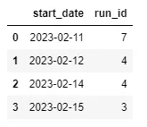
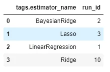
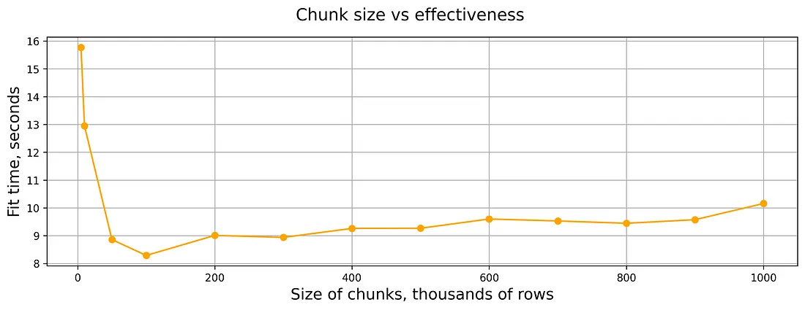

MLOps
Misc
- Weights and Biases - Experiment tracking
MLflow
Misc
Tracking
Misc
mlflow_log_batch(df)- A dataframe with columns key, value, step, timestamp- Key can be names of metrics, params
- Step is probably for loops
- Timestamp can be from
Sys.time()probably
mlflow.search_runs()- querying runsAvailable columns greatly exceed those available in the experiments GUI
Example: py
# Create DataFrame of all runs in *current* experiment df = mlflow.search_runs(order_by=["start_time DESC"]) # Print a list of the columns available # print(list(df.columns)) # Create DataFrame with subset of columns runs_df = df[ [ "run_id", "experiment_id", "status", "start_time", "metrics.mse", "tags.mlflow.source.type", "tags.mlflow.user", "tags.estimator_name", "tags.mlflow.rootRunId", ] ].copy() runs_df.head() # add additional useful columns runs_df["start_date"] = runs_df["start_time"].dt.date runs_df["is_nested_parent"] = runs_df[["run_id","tags.mlflow.rootRunId"]].apply(lambda x: 1 if x["run_id"] == x["tags.mlflow.rootRunId"] else 0, axis=1) runs_df["is_nested_child"] = runs_df[["run_id","tags.mlflow.rootRunId"]].apply(lambda x: 1 if x["tags.mlflow.rootRunId"] is not None and x["run_id"] != x["tags.mlflow.rootRunId"]else 0, axis=1) runs_df
- Use
mlflow.pyfuncfor a model agnostic Class approachAn approach which allows you to use libraries outside of {{sklearn}}
Example: Basic (source)
# Step 1: Create a mlflow.pyfunc model class ToyModel(mlflow.pyfunc.PythonModel): """ ToyModel is a simple example implementation of an MLflow Python model. """ def predict(self, context, model_input): """ A basic predict function that takes a model_input list and returns a new list where each element is increased by one. Parameters: - context (Any): An optional context parameter provided by MLflow. - model_input (list of int or float): A list of numerical values that the model will use for prediction. Returns: - list of int or float: A list with each element in model_input is increased by one. """ return [x + 1 for x in model_input] # Step 2: log this model as an mlflow run with mlflow.start_run(): mlflow.pyfunc.log_model( artifact_path = "model", python_model=ToyModel() ) run_id = mlflow.active_run # Step 3: load the logged model to perform inference model = mlflow.pyfunc.load_model(f"runs:/{run_id}/model") # dummy new data x_new = [1,2,3] # model inference for the new data print(model.predict(x_new)) >>> [2, 3, 4]- This only shows a predict method, but you can include anything you need such as a fit and preprocessing methods.
- See source for a more involved XGBoost model example and details on extracting metadata.
Set experiment name and get experiment id
- Syntax:
mlflow_set_experiment("experiment_name")- This might require a path e.g. “/experiment-name” instead the name
- Experiment IDs can be passed to
start_run()(see below) to ensure that the run is logged into the correct experimentExample: py
my_experiment = mlflow.set_experiment("/mlflow_sdk_test") experiment_id = my_experiment.experiment_id with mlflow.start_run(experiment_id=experiment_id):
- Syntax:
Starting runs
Using a
mlflow_log_function automatically starts a run, but then you have tomlflow_end_runUsing
with(mlflow_start_run(){})stops the run automatically once the code inside thewith()function is completedmlflow_start_run( run_id = NULL, experiment_id = only when run id not specified, start_time = only when client specified, tags = NULL, client = NULL)Example
library(mlflow) library(glmnet) # can format the variable outside the log_param fun or inside alpha <- mlflow_param(args) # experiment contained inside start_run with(mlflow_start_run( ) { alpha_fl <- mlflow_log_param("alpha" = alpha) lambda_fl <- mlflow_log_param("lambda" = mlflow_param(args)) mod <- glmnet(args) # preds # error # see Models section below for details mod_crate <- carrier::crate(~glmnet::glmnet.predict(mod, train_x), mod) mlflow_log_model(mod_crate, "model_folder") mlflow_log_metric("MAE", error) }) # this might go on the inside if you're looping the "with" FUN and want to log results of each loop mlflow_end_run() # not working, logs run, but doesn't log metrics # run saved script mlflow::mlflow_run(entry_point = "script.R")# End any existing runs mlflow.end_run() with mlflow.start_run() as run: # Turn autolog on to save model artifacts, requirements, etc. mlflow.autolog(log_models=True) print(run.info.run_id) diabetes_X = diabetes.data diabetes_y = diabetes.target # Split data into test training sets, 3:1 ratio ( diabetes_X_train, diabetes_X_test, diabetes_y_train, diabetes_y_test, ) = train_test_split(diabetes_X, diabetes_y, test_size=0.25, random_state=42) alpha = 0.9 solver = "cholesky" regr = linear_model.Ridge(alpha=alpha, solver=solver) regr.fit(diabetes_X_train, diabetes_y_train) diabetes_y_pred = regr.predict(diabetes_X_test) # Log desired metrics mlflow.log_metric("mse", mean_squared_error(diabetes_y_test, diabetes_y_pred)) mlflow.log_metric( "rmse", sqrt(mean_squared_error(diabetes_y_test, diabetes_y_pred))Custom run names
Example: py
# End any existing runs mlflow.end_run() # Explicitly name runs today = dt.today() run_name = "Ridge Regression " + str(today) with mlflow.start_run(run_name=run_name) as run:Previously unlogged metrics can be retrieved retroactively with the run id
# py with mlflow.start_run(run_id="3fcf403e1566422493cd6e625693829d") as run: mlflow.log_metric("r2", r2_score(diabetes_y_test, diabetes_y_pred))- The run_id can either be extracted by
print(run.info.run_id)from the previous run, or by queryingmlflow.search_runs()(See Misc above).
- The run_id can either be extracted by
Nested Runs
Useful for evaluating and logging parameter combinations to determine the best model (i.e. grid search), they also serve as a great logical container for organizing your work. With the ability to group experiments, you can compartmentalize individual data science investigations and keep your experiments page organized and tidy.
Example: py; start a nested run
# End any existing runs mlflow.end_run() # Explicitly name runs run_name = "Ridge Regression Nested" with mlflow.start_run(run_name=run_name) as parent_run: print(parent_run.info.run_id) with mlflow.start_run(run_name="Child Run: alpha 0.1", nested=True): # Turn autolog on to save model artifacts, requirements, etc. mlflow.autolog(log_models=True) diabetes_X = diabetes.data diabetes_y = diabetes.target # Split data into test training sets, 3:1 ratio ( diabetes_X_train, diabetes_X_test, diabetes_y_train, diabetes_y_test, ) = train_test_split(diabetes_X, diabetes_y, test_size=0.25, random_state=42) alpha = 0.1 solver = "cholesky" regr = linear_model.Ridge(alpha=alpha, solver=solver) regr.fit(diabetes_X_train, diabetes_y_train) diabetes_y_pred = regr.predict(diabetes_X_test) # Log desired metrics mlflow.log_metric("mse", mean_squared_error(diabetes_y_test, diabetes_y_pred)) mlflow.log_metric( "rmse", sqrt(mean_squared_error(diabetes_y_test, diabetes_y_pred)) ) mlflow.log_metric("r2", r2_score(diabetes_y_test, diabetes_y_pred))- alpha 0.1 is the parameter value being evaluated
Example: py; add child runs
# End any existing runs mlflow.end_run() with mlflow.start_run(run_id="61d34b13649c45699e7f05290935747c") as parent_run: print(parent_run.info.run_id) with mlflow.start_run(run_name="Child Run: alpha 0.2", nested=True): # Turn autolog on to save model artifacts, requirements, etc. mlflow.autolog(log_models=True) diabetes_X = diabetes.data diabetes_y = diabetes.target # Split data into test training sets, 3:1 ratio ( diabetes_X_train, diabetes_X_test, diabetes_y_train, diabetes_y_test, ) = train_test_split(diabetes_X, diabetes_y, test_size=0.25, random_state=42) alpha = 0.2 solver = "cholesky" regr = linear_model.Ridge(alpha=alpha, solver=solver) regr.fit(diabetes_X_train, diabetes_y_train) diabetes_y_pred = regr.predict(diabetes_X_test) # Log desired metrics mlflow.log_metric("mse", mean_squared_error(diabetes_y_test, diabetes_y_pred)) mlflow.log_metric( "rmse", sqrt(mean_squared_error(diabetes_y_test, diabetes_y_pred)) ) mlflow.log_metric("r2", r2_score(diabetes_y_test, diabetes_y_pred))- Add to nested run by using parent run id, e.g. run_id=“61d34b13649c45699e7f05290935747c”
- Obtained by
print(parent_run.info.run_id)from the previous run or querying viamlflow.search_runs(see below)
- Obtained by
- Add to nested run by using parent run id, e.g. run_id=“61d34b13649c45699e7f05290935747c”
Query Runs
Available columns greatly exceed those available in the experiments GUI
Example: py; Create Runs df
# Create DataFrame of all runs in *current* experiment df = mlflow.search_runs(order_by=["start_time DESC"]) # Print a list of the columns available # print(list(df.columns)) # Create DataFrame with subset of columns runs_df = df[ [ "run_id", "experiment_id", "status", "start_time", "metrics.mse", "tags.mlflow.source.type", "tags.mlflow.user", "tags.estimator_name", "tags.mlflow.rootRunId", ] ].copy() runs_df.head() # add additional useful columns runs_df["start_date"] = runs_df["start_time"].dt.date runs_df["is_nested_parent"] = runs_df[["run_id","tags.mlflow.rootRunId"]].apply(lambda x: 1 if x["run_id"] == x["tags.mlflow.rootRunId"] else 0, axis=1) runs_df["is_nested_child"] = runs_df[["run_id","tags.mlflow.rootRunId"]].apply(lambda x: 1 if x["tags.mlflow.rootRunId"] is not None and x["run_id"] != x["tags.mlflow.rootRunId"]else 0, axis=1) runs_dfQuery Runs Object
Example: Number of runs per start date
pd.DataFrame(runs_df.groupby("start_date")["run_id"].count()).reset_index()Example: How many runs have been tested for each algorithm?
pd.DataFrame(runs_df.groupby("tags.estimator_name")["run_id"].count()).reset_index()
Projects
Name of the file is standard - “MLproject”
- yaml file but he didn’t give it an extension
- Multi-Analysis flows take the output of one script and input to another. The first script outputs the object somewhere in the working dir or a sub dir. The second script takes that object as a parameter with value = path.,
- e.g. dat.csv: path. See example https://github.com/mlflow/mlflow/tree/master/examples/multistep_workflow
Example
name: MyProject envir: specify dependencies using packrat snapshot (didn't go into details) entry points: # "main" is the default name used. Any script name can be an entry point name. main: parameters: # 2 methods, looks like same args as mlflow_param or mlflow_log_param # python types used, e.g. float instead of numeric used alpha: {type: float, default: 0.5} lambda: type: float default: 0.5 # CLI commands to execute the script # sigh, he used -P in the video and -r on the github file # he used a -P for each param when executing from CLI, so that might be correct # Although that call to Rscript makes me think it might not be correct command: "Rscript <script_name>.R -P alpha={alpha} -P lambda={lambda}" # another one of their python examples command: "python etl_data.py --ratings-csv {ratings_csv} --max-row-limit {max_row_limit}" # This is similar to one of python their examples and it jives with Rscript practice, except there's a special function in the R script to take the args # command: "Rscript <script_name>.R {alpha} {lambda}" # second script, same format as 1st script validate: blah, blahRun script with variable values from the CLI
mlflow mlflow run . --entry-point script.R -P alpha=0.5 -P lambda=0.7mlflowstarts mlflow.exe- . says run from current directory
- also guessing entry point value is a path from the working directory
Run script from github repo
$mlflow run https://github.com/ercbk/repo --entry-point script.R -P alpha=0.5 -P lambda=0.7- Adds link to repo in source col in ui for that run
- Adds link to commit (repo version) at the time of the run in the version col in the ui for that run
Models
Typically, models in R exist in memory and can be saved as .rds files. However, some models store information in locations that cannot be saved using save() or saveRDS() directly. Serialization packages can provide an interface to capture this information, situate it within a portable object, and restore it for use in new settings.
mlflow_save_modelcreates a directory with the bin file and a MLProject fileExamples
Using a function
mlflow_save_model(carrier::crate(function(x) { library(glmnet) # glmnet requires a matrix predict(model, as.matrix(x)) }, model = mod), "dir_name")predictusually takes a df but glmnet requires a matrix- model = mod is the parameter being passed into the function environment
- [dir_name][var.text] is the name of the folder that will be created
Using a lambda function
mlflow_save_model(carrier::crate(~glmnet::predict.glmnet(model, as.matrix(.x)), model = mod), "penal_glm")- Removed the library function (could’ve done that before as well)
- *** lambda functions require .x instead of just x ***
- The folder name is penal_glm
Serving a model as an API from the CLI
>> mlflow models serve -m file:penal_glmmlflowruns mlflow.exe- serve says create an API
- -m is for specifying the URI of the bin file
- Could be an S3 bucket
- file: says it’s a local path
- Default host:port 127.0.0.1:5000
- -h, -p can specify others
- *** Newdata needs to be in json column major format ***
Prediction is outputted in json as well
Example: Format in column major
jsonlite::toJSON(newdata_df, matrix = "columnmajor")Example: Send json newdata to the API
# CLI example for curl http://127.0.0.1:5000/invocations -H 'Content-Type: application/json' -d '{ "columns": ["a", "b", "c"], "data": [[1, 2, 3], [4, 5, 6]]}'
UI
mlflow_ui( )- Click date,
- metric vs runs
- notes
- artifact
- If running through github
- link to repo in source column for that run
- link to commit (repo version) at the time of the run in the version column
Targets
Misc
Also see
- Projects, Analyses >> Misc >> Analysis Workflow using {targets}
Resources
- Docs, User Manual (ebook), Getting Started with targets in 4 min (Video)
- Working Smarter With targets (ebook)
- Carpentries Incubator: Targets Workshop
use_targets- Creates a “_targets.R” file in the project’s root directory
- Configures and defines the pipeline
- load packages
- HPC settings
- Load Functions from scripts
- Target pipeline
- Configures and defines the pipeline
- File has commented lines to guide you through the process
- Creates a “_targets.R” file in the project’s root directory
Check Pipeline
tar_manifest(fields = command)- lists names of targets and the functions to execute them
tar_visnetwork()- Shows target dependency graph
- Could be slow if you have a lot of targets, so may want to comment in/out sections of targets and view them in batches.
Run
tar_makein the background- Put into .Rprofile in project
make <- function() { job::job( {{ targets::tar_make() }}, title = "<whatever>" ) }Get a target from another project
withr::with_dir( "~/workflows/project_name/", targets::tar_load(project_name) )
Target Pipeline
Example
list( tar_target(file, "data.csv", format = "file"), tar_target(data, get_data(file)), tar_target(model, fit_model(data)), tar_target(plot, plot_model(model, data)) )1st arg is the target name (e.g. file, data, model, plot)
2nd arg is a function
- Function inputs are target names
- Except first target which has a file name for the 2nd arg
- “format” arg says that this target is a file and if the contents change, a re-hash should be triggered.
tar_make()- Execute pipeline- Output saved in _targets >> objects
tar_read(target_name)- Reads the output of a target- e.g. If it’s a plot output, a plot will be rendered in the viewer.
Dask
Misc
Notes from Saturn Dask in the Cloud video
XGBoost, RAPIDS, LightGLM libraries can natively recognize Dask DataFrames and use parallelize using Dask
{{dask-ml}} can be used to simplify training multiple models in parallel
PyTorch DDP (Distributed Data Parallel)
- {{dask_pytorch_ddp}} for Saturn
- Each GPU has it’s own version of the model and trains concurrently on a data batch
- Results are shared between GPUs and a combined gradient is computed
from dask_pytorch_ddp import dispatch futures = dispatch.run(dask_client, model_training_function)
Basic Usage
Dask Collections
- Dask DataFrames - Mimics Pandas DataFrames
- They’re essentially collection of pandas dfs spread across workers
- Dask Arrays - Mimics NumPy
- Dask Bags - Mimics map, filter, and other actions on collections
- Dask DataFrames - Mimics Pandas DataFrames
Storage
- Cloud storage (e.g. S3, EFS) can be queried by Dask workers
- Saturn also provides shared folders that attach directly to Dask workers.
Use Locally
import dask.dataframe as dd ddf = dd.read.csv("data/example.csv") ddf.groupby('col_name').mean().compute()computestarts the computation and collects the results.- Evidently other functions can have this effect (see example). Need to check docs.
- For a Local Cluster, the cluster = LocalCluster() and Client(cluster) commands are used. Recommende to initialize such a cluster only once in code using the Singleton pattern. You can see how it can be implemented in Python here. Otherwise, you will initialize a new cluster every launch;
Specify chunks and object type
from dask import dataframe as dd ddf = dd.read_csv(r"FILEPATH", dtype={'SimillarHTTP': 'object'},blocksize='64MB')Fit sklearn models in parallel
import joblib from dask.distributed import Client client = Client(processes=False) with joblib.parallel_backend("dask"): rf.fit(X_train, y_train)- Not sure if client is needed here
Evaluation Options
Dask Delayed
- For user-defined functions — allows dask to parallelize and lazily compute them
@dask.delayed def double(x): return x*2 @dask.delayed def add(x, y): return x + y a = double(3) b = double(2) total = add(a,b) # chained delayed functions total.compute() # evaluates the functionsFutures
Evaluated immediately in the background
Single function
def double(x): return x*2 future = client.submit(double, 3)Iterable
learning_rates = np.arange(0.0005, 0.0035, 0.0005) futures = client.map(train_model, learning_rates) # map(function, iterable) gathered_futures = client.gather(futures) futures_computed = client.compute(futures_gathered, resources = {"gpu":1})- resources tells dask to only send one task per gpu-worker in this case
Monitoring
Logging
from distributed.worker import logger @dask.delayed def log(): logger.info(f'This is sent to the worker log') # ANN example logger.info( f'{datetime.datetime.now().isoformat(){style='color: #990000'}[}]{style='color: #990000'} - lr {lr} - epoch {epoch} - phase {phase} - loss {epoch_loss}' )- Don’t need a separate log function. You can just include
logger.infoin the model training function.
- Don’t need a separate log function. You can just include
Built-in dashboard
.png)
- Task Stream - each bar is a worker; colors show activity category (e.g. busy, finished, error, etc.)
Error Handling
The Dask scheduler will continue the computation and start another worker if one fails.
- If your code is what causing the error then it won’t matter
Libraries
import traceback from distributed.client import wait, FIRST_COMPLETEDCreate a queue of futures
queue = client.compute(results) futures_idx = {fut: i for i, fut in enumerate(queue){style='color: #990000'}[}]{style='color: #990000'} results = [None for x in range(len(queue))]- Since we’re not passsing [sync = True]{arg-text}, we immediately get back futures which represent the computation that hasn’t been completed yet.
- Enumerate each item in the future
- Populate the “results” list with Nones for now
Wait for results
while queue: result = wait(queue, return_when = FIRST_COMPLETED)Futures either succeed (“finished”) or they error (chunk included in while loop)
for future in result.done: index = futures_idx[future] if future.status == 'finished': print(f'finished computation #[{index}]{style='color: #990000'}') results[index] = future.result() else: print(f'errored #[{index}]{style='color: #990000'}') try: future.result() except Exception as e: results[index] = e traceback.print_exc() queue = result.not_done- future.status contains results of computation so you know what to retry
- Succeeds: Print that it finished and store the result
- Error: Store exception and print the stack trace
- Set queue to those futures that haven’t been completed
Optimization
- Resources
- Dask Dataframes Best Practices
- In general, recommends partition size of 100MB, but this doesn’t take into account server specs, dataset size, or application (e.g model fitting). Could be a useful starting point though.
- Dask Dataframes Best Practices
- Notes from:
- Almost Everything You Want to Know About Partition Size of Dask Dataframes
- Use Case: 2-10M rows using 8 to 16GB of RAM
- Almost Everything You Want to Know About Partition Size of Dask Dataframes
- Partition Size
- Issues
- Too Large: Takes too much time and resources to process them in RAM
- Too Small: To process all of them Dask needs to load these tables into RAM too often. Therefore, more time is spent on synchronization and uploading/downloading than on the calculations themselves
- Example: Runtime, 500K rows, 4 columns, XGBoost
- Exact resource specs for this chart werent’ provided, but the experiment included 2, 3, and 4 vCPUs and 1, 2, and 4GB RAM per vCPU
- Issues
{kind=link}
Cloud
Saturn
- Starting Dask from Jupyter Server that’s running JupyterLab, the Dask Cluster will have all the libraries loaded into Jupyter Server
- Options
- Saturn Cloud UI
- Once you start a Jupyter Server, there’s a button to click that allows you to specify and run a Dask Cluster
- Do work on a JupyterLab notebook
- Benefits
- In a shared environment
- Libraries automatically get loaded onto the Dask cluster
- Once you start a Jupyter Server, there’s a button to click that allows you to specify and run a Dask Cluster
- Programmatically (locally)
SSH into Jupyter Server (which is connected to the Dask Cluster) at Saturn
Connect directly to Dask Cluster at Saturn
Cons
- Have to load packages locally and on Jupyter Server and/or Dask Cluster
- Make sure versions/environments match
Connection (basic)
from dask_saturn import SaturnCluster cluster = SaturnCluster() client = Client(cluster)
- Saturn Cloud UI
- Example
From inside a jupyterlab notebook on a jupyter server with a dask cluster running
Imports
import dask.dataframe as dd import numpy as np from dask.diagnostics import ProgressBar from dask.distributed import Client, wait from dask_saturn import SaturnClusterStart Cluster
n_workers = 3 cluster = SaturnCluster() client = Client(cluster) client.wait_for_workers(n_workers = n_workers) # if workers aren't ready, wait for them to spin up before proceding client.restart()For bigger tasks like training ANNs on GPUs, you to specify a gpu instance type (i.e. “worker_size”) and scheduler with plenty of memory
cluster = SaturnCluster( n_workers = n_workers, scheduler_size = 'large', worker_size = 'g3dnxlarge' )- If you’re bringing back sizable results from your workers, your scheduler needs plenty of RAM.
Upload Code files
1 file -
client.upload_file("functions.py")- Uploads a single file to all workers
Directory
from dask_saturn import RegesterFiles, sync_files client.register_worker_plugin(RegisterFiles()) sync_files(client, "functions") client.restart()- Plugin allows you to sync directory among workersjjj
Data
ddf = dd.read_parquet( "/path/to/file.pq" ) ddf = ddf.persist() _ = wait(ddf) # halts progress until persistance is done- Persist saves the data to the Dask workers
- Not necessary, but if you didn’t, then each time you call
.compute()you’d have to reload the file
- Not necessary, but if you didn’t, then each time you call
- Persist saves the data to the Dask workers
Do work
ddf["signal"] = ( ddf["ask_close"].rolling(5 * 60).mean() - ddf["ask_close"].rolling(20 * 60).mean() ) # ... blah, blah, blah ddf["total"] = ddf["return"].cumsum().apply(np.exp, meta = "return", "float64"))- Syntax just like pandas except:
- meta = (column, type) - Dask’s lazy computation sometimes gets column types wrong, so this specifies types explicitly
- Syntax just like pandas except:
Compute and bring back to client
total_returns = ddf["total"].tail(1) print(total_returns)- Evidently
.taildoes whatcomputeis supposed to do.
- Evidently
Vetiver
Misc
Helps with 3 aspects of MLOps
- Versioning
- Keeps track of metadata
- Helpful during retraining
- Deploying
- Utilizes REST APIs to serve models
- Monitoring
- Tracks model performance
- Versioning
Fit Workflow Object
model <- recipe(species ~ island + flipper_length_mm + body_mass_g, data = penguins_data) |> workflow(nearest_neighbor(mode = "classification")) |> fit(penguins_data)Create a Vetiver Model Object
v_model <- vetiver::vetiver_model(model, model_name = "k-nn", description = "hyperparam-update-4") v_model #> #> ── k-nn ─ <bundled_workflow> model for deployment #> hyperparam-update-4 using 3 featuresVersioning
Write model to a {pins} board (storage)
board <- pins::board_connect() board %>% vetiver_pin_write(v_model)board_*has many options including the major cloud providers- Here “connect” stands for Posit Connect
Create a REST API
library(plumber) pr() %>% vetiver_api(v_model) #> # Plumber router with 2 endpoints, 4 filters, and 1 sub-router. #> # Use `pr_run()` on this object to start the API. #> ├──[queryString] #> ├──[body] #> ├──[cookieParser] #> ├──[sharedSecret] #> ├──/logo #> │ │ # Plumber static router serving from directory: /Library/Frameworks/R.framework/Versions/4.2-arm64/Resources/library/vetiver #> ├──/ping (GET) #> └──/predict (POST) ## next pipe to `pr_run()` for local API- Then next step is pipe this into
pr_run()to start the API locally - Helpful for development or debugging
- Then next step is pipe this into
Test
Deploy locally
pr() %>% vetiver_api(v_model) |> pr_run()- When you run the code, a browser window will likely open. If it doesn’t simply navigate to
http://127.0.0.1:7764/__docs__/
- When you run the code, a browser window will likely open. If it doesn’t simply navigate to
Ping API
base_url <- "127.0.0.1:7764/" url <- paste0(base_url, "ping") r <- httr::GET(url) metadata <- httr::content(r, as = "text", encoding = "UTF-8") jsonlite::fromJSON(metadata) #> $status #> [1] "online" #> #> $time #> [1] "2024-05-27 17:15:39"Test
predictendpointurl <- paste0(base_url, "predict") endpoint <- vetiver::vetiver_endpoint(url) pred_data <- penguins_data |> dplyr::select("island", "flipper_length_mm", "body_mass_g") |> dplyr::slice_sample(n = 10) predict(endpoint, pred_data)- The API also has endpoints metadata and pin-url
Deploy
Using Docker
Create a docker file
vetiver::vetiver_prepare_docker( pins::board_connect(), "colin/k-nn", docker_args = list(port = 8080) )- Creates a docker file, renv.lock file, and plumber app that can be uploaded and deployed anywhere (e.g. AWS, GCP, digitalocean)
Build Image
docker build --tag my-first-model .Run Image
docker run --rm --publish 8080:8080 my-first-model
Without Docker
Posit Connect
vetiver::vetiver_deploy_rsconnect(board = pins::board_connect(), "colin/k-nn")vetiver_deploy_sagemaker()also available
Monitor
Write metrics to storage
new_metrics <- augment(v, housing_val) %>% vetiver_compute_metrics(date, "week", price, .pred) vetiver_pin_metrics( board, new_metrics, "julia.silge/housing-metrics", overwrite = TRUE ) #> # A tibble: 90 × 5 #> .index .n .metric .estimator .estimate #> <dttm> <int> <chr> <chr> <dbl> #> 1 2014-11-02 00:00:00 224 rmse standard 206850. #> 2 2014-11-02 00:00:00 224 rsq standard 0.413 #> 3 2014-11-02 00:00:00 224 mae standard 140870. #> 4 2014-11-06 00:00:00 373 rmse standard 221627. #> 5 2014-11-06 00:00:00 373 rsq standard 0.557 #> 6 2014-11-06 00:00:00 373 mae standard 150366. #> 7 2014-11-13 00:00:00 427 rmse standard 255504. #> 8 2014-11-13 00:00:00 427 rsq standard 0.555 #> 9 2014-11-13 00:00:00 427 mae standard 147035. #> 10 2014-11-20 00:00:00 376 rmse standard 248405. #> # ℹ 80 more rowsAnalyze metrics
new_metrics %>% ## you can operate on your metrics as needed: filter(.metric %in% c("rmse", "mae"), .n > 20) %>% vetiver_plot_metrics() + ## you can also operate on the ggplot: scale_size(range = c(2, 5))
{kind=link}